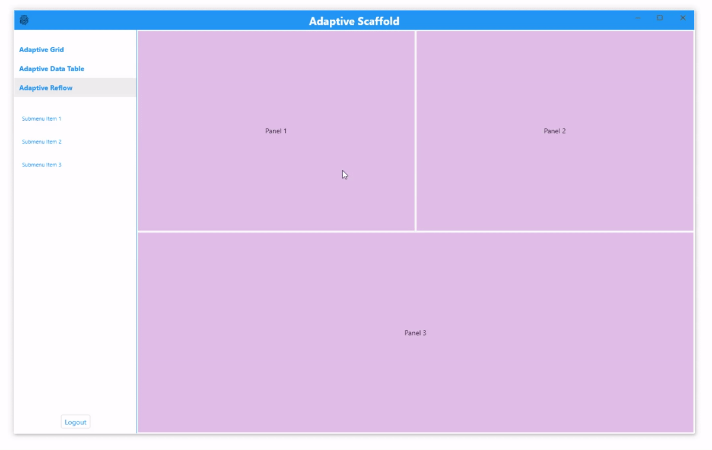
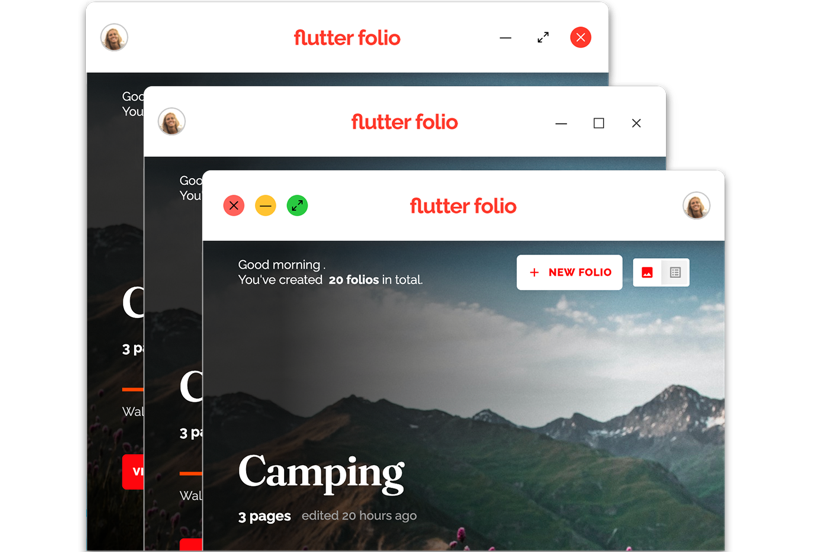
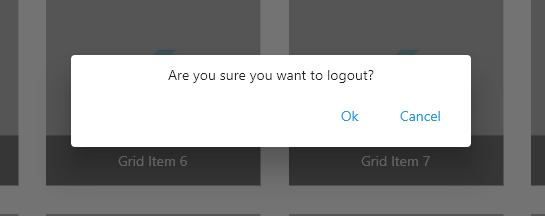
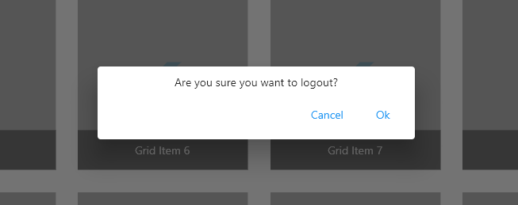

Building adaptive apps
Overview
Flutter provides new opportunities to build apps that can run on mobile, desktop, and the web from a single codebase. However, with these opportunities, come new challenges. You want your app to feel familiar to users, adapting to each platform by maximizing usability and ensuring a comfortable and seamless experience. That is, you need to build apps that are not just multiplatform, but are fully platform adaptive.
There are many considerations for developing platform-adaptive apps, but they fall into three major categories:
This page covers all three categories in detail using code snippets to illustrate the concepts. If you’d like to see how these concepts come together, check out the Flokk and Folio examples that were built using the concepts described here.
Original demo code for adaptive app development techniques from flutter-adaptive-demo.
Building adaptive layouts
One of the first things you must consider when writing your app for multiple platforms is how to adapt it to the various sizes and shapes of the screens that it will run on.
Layout widgets
If you’ve been building apps or websites, you’re probably familiar with creating responsive interfaces. Luckily for Flutter developers, there are a large set of widgets to make this easier.
Some of Flutter’s most useful layout widgets include:
Single child
-
Align—Aligns a child within itself. It takes a double value between -1 and 1, for both the vertical and horizontal alignment. -
AspectRatio—Attempts to size the child to a specific aspect ratio. -
ConstrainedBox—Imposes size constraints on its child, offering control over the minimum or maximum size. -
CustomSingleChildLayout—Uses a delegate function to position a single child. The delegate can determine the layout constraints and positioning for the child. -
ExpandedandFlexible—Allows a child of aRoworColumnto shrink or grow to fill any available space. -
FractionallySizedBox—Sizes its child to a fraction of the available space. -
LayoutBuilder—Builds a widget that can reflow itself based on its parents size. -
SingleChildScrollView—Adds scrolling to a single child. Often used with aRoworColumn.
Multichild
-
Column,Row, andFlex—Lays out children in a single horizontal or vertical run. BothColumnandRowextend theFlexwidget. -
CustomMultiChildLayout—Uses a delegate function to position multiple children during the layout phase. -
Flow—Similar toCustomMultiChildLayout, but more efficient because it’s performed during the paint phase rather than the layout phase. -
ListView,GridView, andCustomScrollView—Provides scrollable lists of children. -
Stack—Layers and positions multiple children relative to the edges of theStack. Functions similarly to position-fixed in CSS. -
Table—Uses a classic table layout algorithm for its children, combining multiple rows and columns. -
Wrap—Displays its children in multiple horizontal or vertical runs.
To see more available widgets and example code, see Layout widgets.
Visual density
Different input devices offer various levels of precision,
which necessitate differently sized hit areas.
Flutter’s VisualDensity class makes it easy to adjust the
density of your views across the entire application,
for example, by making a button larger
(and therefore easier to tap) on a touch device.
When you change the VisualDensity for your MaterialApp,
MaterialComponents that support it animate their densities
to match. By default, both horizontal and vertical densities
are set to 0.0, but you can set the densities to any negative
or positive value that you want. By switching between different
densities, you can easily adjust your UI:

To set a custom visual density, inject the density into
your MaterialApp theme:
double densityAmt = touchMode ? 0.0 : -1.0;
VisualDensity density =
VisualDensity(horizontal: densityAmt, vertical: densityAmt);
return MaterialApp(
theme: ThemeData(visualDensity: density),
home: MainAppScaffold(),
debugShowCheckedModeBanner: false,
);To use VisualDensity inside your own views,
you can look it up:
VisualDensity density = Theme.of(context).visualDensity;Not only does the container react automatically to changes in density, it also animates when it changes. This ties together your custom components, along with the built-in components, for a smooth transition effect across the app.
As shown, VisualDensity is unit-less,
so it can mean different things to different views.
In this example, 1 density unit equals 6 pixels,
but this is totally up to your views to decide.
The fact that it is unit-less makes it quite versatile,
and it should work in most contexts.
It’s worth noting that the Material Components generally
use a value of around 4 logical pixels for each
visual density unit. For more information about the
supported components, see VisualDensity API.
For more information about density principles in general,
see the Material Design guide.
Contextual layout
If you need more than density changes and can’t find a widget that does what you need, you can take a more procedural approach to adjust parameters, calculate sizes, swap widgets, or completely restructure your UI to suit a particular form factor.
Screen-based breakpoints
The simplest form of procedural layouts uses
screen-based breakpoints. In Flutter,
this can be done with the MediaQuery API.
There are no hard and fast rules for the sizes to use
here, but these are general values:
class FormFactor {
static double desktop = 900;
static double tablet = 600;
static double handset = 300;
}Using breakpoints, you can set up a simple system to determine the device type:
ScreenType getFormFactor(BuildContext context) {
// Use .shortestSide to detect device type regardless of orientation
double deviceWidth = MediaQuery.of(context).size.shortestSide;
if (deviceWidth > FormFactor.desktop) return ScreenType.desktop;
if (deviceWidth > FormFactor.tablet) return ScreenType.tablet;
if (deviceWidth > FormFactor.handset) return ScreenType.handset;
return ScreenType.watch;
}As an alternative, you could abstract it more and define it in terms of small to large:
enum ScreenSize { small, normal, large, extraLarge }
ScreenSize getSize(BuildContext context) {
double deviceWidth = MediaQuery.of(context).size.shortestSide;
if (deviceWidth > 900) return ScreenSize.extraLarge;
if (deviceWidth > 600) return ScreenSize.large;
if (deviceWidth > 300) return ScreenSize.normal;
return ScreenSize.small;
}Screen-based breakpoints are best used for making top-level decisions in your app. Changing things like visual density, paddings, or font-sizes are best when defined on a global basis.
You can also use screen-based breakpoints to reflow your top-level widget trees. For example, you could switch from a vertical to a horizontal layout when the user isn’t on a handset:
bool isHandset = MediaQuery.of(context).size.width < 600;
return Flex(
direction: isHandset ? Axis.vertical : Axis.horizontal,
children: const [Text('Foo'), Text('Bar'), Text('Baz')],
);In another widget, you might swap some of the children completely:
Widget foo = Row(
children: [
...isHandset ? _getHandsetChildren() : _getNormalChildren(),
],
);Use LayoutBuilder for extra flexibility
Even though checking total screen size is great for full-screen pages or making global layout decisions, it’s often not ideal for nested subviews. Often, subviews have their own internal breakpoints and care only about the space that they have available to render.
The simplest way to handle this in Flutter is using the
LayoutBuilder class. LayoutBuilder allows a
widget to respond to incoming local size constraints,
which can make the widget more versatile than if it
depended on a global value.
The previous example could be rewritten using LayoutBuilder:
Widget foo = LayoutBuilder(builder: (context, constraints) {
bool useVerticalLayout = constraints.maxWidth < 400;
return Flex(
direction: useVerticalLayout ? Axis.vertical : Axis.horizontal,
children: const [
Text('Hello'),
Text('World'),
],
);
});This widget can now be composed within a side panel, dialog, or even a full-screen view, and adapt its layout to whatever space is provided.
Device segmentation
There are times when you want to make layout decisions based on the actual platform you’re running on, regardless of size. For example, when building a custom title bar, you might need to check the operating system type and tweak the layout of your title bar, so it doesn’t get covered by the native window buttons.
To determine which combination of platforms you’re on,
you can use the Platform API along with the kIsWeb value:
bool get isMobileDevice => !kIsWeb && (Platform.isIOS || Platform.isAndroid);
bool get isDesktopDevice =>
!kIsWeb && (Platform.isMacOS || Platform.isWindows || Platform.isLinux);
bool get isMobileDeviceOrWeb => kIsWeb || isMobileDevice;
bool get isDesktopDeviceOrWeb => kIsWeb || isDesktopDevice;The Platform API can’t be accessed from web builds without
throwing an exception, because the dart.io package isn’t
supported on the web target. As a result, the above code checks
for web first, and because of short-circuiting,
Dart never calls Platform on web targets.
Use Platform/kIsWeb when the logic absolutely must
run for a given platform. For example,
talking to a plugin that only works on iOS,
or displaying a widget that only conforms to
Play Store policy and not the App Store’s.
Single source of truth for styling
You’ll probably find it easier to maintain your views if you create a single source of truth for styling values like padding, spacing, corner shape, font sizes, and so on. This can be done easily with some helper classes:
class Insets {
static const double xsmall = 3;
static const double small = 4;
static const double medium = 5;
static const double large = 10;
static const double extraLarge = 20;
// etc
}
class Fonts {
static const String raleway = 'Raleway';
// etc
}
class TextStyles {
static const TextStyle raleway = TextStyle(
fontFamily: Fonts.raleway,
);
static TextStyle buttonText1 =
const TextStyle(fontWeight: FontWeight.bold, fontSize: 14);
static TextStyle buttonText2 =
const TextStyle(fontWeight: FontWeight.normal, fontSize: 11);
static TextStyle h1 =
const TextStyle(fontWeight: FontWeight.bold, fontSize: 22);
static TextStyle h2 =
const TextStyle(fontWeight: FontWeight.bold, fontSize: 16);
static TextStyle body1 = raleway.copyWith(color: const Color(0xFF42A5F5));
// etc
}These constants can then be used in place of hard-coded numeric values:
return Padding(
padding: const EdgeInsets.all(Insets.small),
child: Text('Hello!', style: TextStyles.body1),
);Use Theme.of(context).platform for theming and
design choices, like what kind of switches to show
and general Cupertino/Material adaptions.
With all views referencing the same shared-design system rules, they tend to look better and more consistent. Making a change or adjusting a value for a specific platform can be done in a single place, instead of using an error-prone search and replace. Using shared rules has the added benefit of helping enforce consistency on the design side.
Some common design system categories that can be represented this way are:
- Animation timings
- Sizes and breakpoints
- Insets and paddings
- Corner radius
- Shadows
- Strokes
- Font families, sizes, and styles
Like most rules, there are exceptions:
one-off values that are used nowhere else in the app.
There is little point in cluttering up the styling rules
with these values, but it’s worth considering if they
should be derived from an existing value (for example,
padding + 1.0). You should also watch for reuse or duplication
of the same semantic values. Those values should likely be
added to the global styling ruleset.
Design to the strengths of each form factor
Beyond screen size, you should also spend time considering the unique strengths and weaknesses of different form factors. It isn’t always ideal for your multiplatform app to offer identical functionality everywhere. Consider whether it makes sense to focus on specific capabilities, or even remove certain features, on some device categories.
For example, mobile devices are portable and have cameras, but they aren’t well suited for detailed creative work. With this in mind, you might focus more on capturing content and tagging it with location data for a mobile UI, but focus on organizing or manipulating that content for a tablet or desktop UI.
Another example is leveraging the web’s extremely low barrier for sharing. If you’re deploying a web app, decide which deep links to support, and design your navigation routes with those in mind.
The key takeaway here is to think about what each platform does best and see if there are unique capabilities you can leverage.
Use desktop build targets for rapid testing
One of the most effective ways to test adaptive interfaces is to take advantage of the desktop build targets.
When running on a desktop, you can easily resize the window while the app is running to preview various screen sizes. This, combined with hot reload, can greatly accelerate the development of a responsive UI.

Solve touch first
Building a great touch UI can often be more difficult than a traditional desktop UI due, in part, to the lack of input accelerators like right-click, scroll wheel, or keyboard shortcuts.
One way to approach this challenge is to focus initially on a great touch-oriented UI. You can still do most of your testing using the desktop target for its iteration speed. But, remember to switch frequently to a mobile device to verify that everything feels right.
After you have the touch interface polished, you can tweak the visual density for mouse users, and then layer on all the additional inputs. Approach these other inputs as accelerator—alternatives that make a task faster. The important thing to consider is what a user expects when using a particular input device, and work to reflect that in your app.
Input
Of course, it isn’t enough to just adapt how your app looks, you also have to support varying user inputs. The mouse and keyboard introduce input types beyond those found on a touch device—like scroll wheel, right-click, hover interactions, tab traversal, and keyboard shortcuts.
Scroll wheel
Scrolling widgets like ScrollView or ListView
support the scroll wheel by default, and because
almost every scrollable custom widget is built
using one of these, it works with them as well.
If you need to implement custom scroll behavior,
you can use the Listener widget, which lets you
customize how your UI reacts to the scroll wheel.
return Listener(
onPointerSignal: (event) {
if (event is PointerScrollEvent) print(event.scrollDelta.dy);
},
child: ListView(),
);Tab traversal and focus interactions
Users with physical keyboards expect that they can use the tab key to quickly navigate your application, and users with motor or vision differences often rely completely on keyboard navigation.
There are two considerations for tab interactions: how focus moves from widget to widget, known as traversal, and the visual highlight shown when a widget is focused.
Most built-in components, like buttons and text fields,
support traversal and highlights by default.
If you have your own widget that you want included in
traversal, you can use the FocusableActionDetector widget
to create your own controls. It combines the functionality
of Actions, Shortcuts, MouseRegion, and
Focus widgets to create a detector that defines actions
and key bindings, and provides callbacks for handling focus
and hover highlights.
class _BasicActionDetectorState extends State<BasicActionDetector> {
bool _hasFocus = false;
@override
Widget build(BuildContext context) {
return FocusableActionDetector(
onFocusChange: (value) => setState(() => _hasFocus = value),
actions: <Type, Action<Intent>>{
ActivateIntent: CallbackAction<Intent>(onInvoke: (intent) {
print('Enter or Space was pressed!');
return null;
}),
},
child: Stack(
clipBehavior: Clip.none,
children: [
const FlutterLogo(size: 100),
// Position focus in the negative margin for a cool effect
if (_hasFocus)
Positioned(
left: -4,
top: -4,
bottom: -4,
right: -4,
child: _roundedBorder(),
)
],
),
);
}
}Controlling traversal order
To get more control over the order that
widgets are focused on when the user presses tab,
you can use FocusTraversalGroup to define sections
of the tree that should be treated as a group when tabbing.
For example, you might to tab through all the fields in a form before tabbing to the submit button:
return Column(children: [
FocusTraversalGroup(
child: MyFormWithMultipleColumnsAndRows(),
),
SubmitButton(),
]);Flutter has several built-in ways to traverse widgets and groups,
defaulting to the ReadingOrderTraversalPolicy class.
This class usually works well, but it’s possible to modify this
using another predefined TraversalPolicy class or by creating
a custom policy.
Keyboard accelerators
In addition to tab traversal, desktop and web users are accustomed
to having various keyboard shortcuts bound to specific actions.
Whether it’s the Delete key for quick deletions or
Control+N for a new document, be sure to consider the different
accelerators your users expect. The keyboard is a powerful
input tool, so try to squeeze as much efficiency from it as you can.
Your users will appreciate it!
Keyboard accelerators can be accomplished in a few ways in Flutter depending on your goals.
If you have a single widget like a TextField or a Button that
already has a focus node, you can wrap it in a KeyboardListener
or a Focus widget and listen for keyboard events:
@override
Widget build(BuildContext context) {
return Focus(
onKeyEvent: (node, event) {
if (event is KeyDownEvent) {
print(event.logicalKey);
}
return KeyEventResult.ignored;
},
child: ConstrainedBox(
constraints: const BoxConstraints(maxWidth: 400),
child: const TextField(
decoration: InputDecoration(
border: OutlineInputBorder(),
),
),
),
);
}
}If you’d like to apply a set of keyboard shortcuts to a
large section of the tree, you can use the Shortcuts widget:
// Define a class for each type of shortcut action you want
class CreateNewItemIntent extends Intent {
const CreateNewItemIntent();
}
Widget build(BuildContext context) {
return Shortcuts(
// Bind intents to key combinations
shortcuts: const <ShortcutActivator, Intent>{
SingleActivator(LogicalKeyboardKey.keyN, control: true):
CreateNewItemIntent(),
},
child: Actions(
// Bind intents to an actual method in your code
actions: <Type, Action<Intent>>{
CreateNewItemIntent: CallbackAction<CreateNewItemIntent>(
onInvoke: (intent) => _createNewItem(),
),
},
// Your sub-tree must be wrapped in a focusNode, so it can take focus.
child: Focus(
autofocus: true,
child: Container(),
),
),
);
}The Shortcuts widget is useful because it only
allows shortcuts to be fired when this widget tree
or one of its children has focus and is visible.
The final option is a global listener. This listener
can be used for always-on, app-wide shortcuts or for
panels that can accept shortcuts whenever they’re visible
(regardless of their focus state). Adding global listeners
is easy with HardwareKeyboard:
@override
void initState() {
super.initState();
HardwareKeyboard.instance.addHandler(_handleKey);
}
@override
void dispose() {
HardwareKeyboard.instance.removeHandler(_handleKey);
super.dispose();
}To check key combinations with the global listener,
you can use the HardwareKeyboard.instance.logicalKeysPressed set.
For example, a method like the following can check whether any
of the provided keys are being held down:
static bool isKeyDown(Set<LogicalKeyboardKey> keys) {
return keys
.intersection(HardwareKeyboard.instance.logicalKeysPressed)
.isNotEmpty;
}Putting these two things together,
you can fire an action when Shift+N is pressed:
bool _handleKey(KeyEvent event) {
bool isShiftDown = isKeyDown({
LogicalKeyboardKey.shiftLeft,
LogicalKeyboardKey.shiftRight,
});
if (isShiftDown && event.logicalKey == LogicalKeyboardKey.keyN) {
_createNewItem();
return true;
}
return false;
}One note of caution when using the static listener,
is that you often need to disable it when the user
is typing in a field or when the widget it’s associated with
is hidden from view.
Unlike with Shortcuts or KeyboardListener,
this is your responsibility to manage. This can be especially
important when you’re binding a Delete/Backspace accelerator for
Delete, but then have child TextFields that the user
might be typing in.
Mouse enter, exit, and hover
On desktop, it’s common to change the mouse cursor
to indicate the functionality about the content the
mouse is hovering over. For example, you usually see
a hand cursor when you hover over a button,
or an I cursor when you hover over text.
The Material Component set has built-in support
for your standard button and text cursors.
To change the cursor from within your own widgets,
use MouseRegion:
// Show hand cursor
return MouseRegion(
cursor: SystemMouseCursors.click,
// Request focus when clicked
child: GestureDetector(
onTap: () {
Focus.of(context).requestFocus();
_submit();
},
child: Logo(showBorder: hasFocus),
),
);MouseRegion is also useful for creating custom
rollover and hover effects:
return MouseRegion(
onEnter: (_) => setState(() => _isMouseOver = true),
onExit: (_) => setState(() => _isMouseOver = false),
onHover: (e) => print(e.localPosition),
child: Container(
height: 500,
color: _isMouseOver ? Colors.blue : Colors.black,
),
);Idioms and norms
The final area to consider for adaptive apps is platform standards. Each platform has its own idioms and norms; these nominal or de facto standards inform user expectations of how an application should behave. Thanks, in part to the web, users are accustomed to more customized experiences, but reflecting these platform standards can still provide significant benefits:
-
Reduce cognitive load—By matching the user’s existing mental model, accomplishing tasks becomes intuitive, which requires less thinking, boosts productivity, and reduces frustrations.
-
Build trust—Users can become wary or suspicious when applications don’t adhere to their expectations. Conversely, a UI that feels familiar can build user trust and can help improve the perception of quality. This often has the added benefit of better app store ratings—something we can all appreciate!
Consider expected behavior on each platform
The first step is to spend some time considering what the expected appearance, presentation, or behavior is on this platform. Try to forget any limitations of your current implementation, and just envision the ideal user experience. Work backwards from there.
Another way to think about this is to ask, “How would a user of this platform expect to achieve this goal?” Then, try to envision how that would work in your app without any compromises.
This can be difficult if you aren’t a regular user of the platform. You might be unaware of the specific idioms and can easily miss them completely. For example, a lifetime Android user is likely unaware of platform conventions on iOS, and the same holds true for macOS, Linux, and Windows. These differences might be subtle to you, but be painfully obvious to an experienced user.
Find a platform advocate
If possible, assign someone as an advocate for each platform. Ideally, your advocate uses the platform as their primary device, and can offer the perspective of a highly opinionated user. To reduce the number of people, combine roles. Have one advocate for Windows and Android, one for Linux and the web, and one for Mac and iOS.
The goal is to have constant, informed feedback so the app feels great on each platform. Advocates should be encouraged to be quite picky, calling out anything they feel differs from typical applications on their device. A simple example is how the default button in a dialog is typically on the left on Mac and Linux, but is on the right on Windows. Details like that are easy to miss if you aren’t using a platform on a regular basis.
Stay unique
Conforming to expected behaviors doesn’t mean that your app needs to use default components or styling. Many of the most popular multiplatform apps have very distinct and opinionated UIs including custom buttons, context menus, and title bars.
The more you can consolidate styling and behavior across platforms, the easier development and testing will be. The trick is to balance creating a unique experience with a strong identity, while respecting the norms of each platform.
Common idioms and norms to consider
Take a quick look at a few specific norms and idioms you might want to consider, and how you could approach them in Flutter.
Scrollbar appearance and behavior
Desktop and mobile users expect scrollbars, but they expect them to behave differently on different platforms. Mobile users expect smaller scrollbars that only appear while scrolling, whereas desktop users generally expect omnipresent, larger scrollbars that they can click or drag.
Flutter comes with a built-in Scrollbar widget that already
has support for adaptive colors and sizes according to the
current platform. The one tweak you might want to make is to
toggle alwaysShown when on a desktop platform:
return Scrollbar(
thumbVisibility: DeviceType.isDesktop,
controller: _scrollController,
child: GridView.count(
controller: _scrollController,
padding: const EdgeInsets.all(Insets.extraLarge),
childAspectRatio: 1,
crossAxisCount: colCount,
children: listChildren,
),
);This subtle attention to detail can make your app feel more comfortable on a given platform.
Multi-select
Dealing with multi-select within a list is another area with subtle differences across platforms:
static bool get isSpanSelectModifierDown =>
isKeyDown({LogicalKeyboardKey.shiftLeft, LogicalKeyboardKey.shiftRight});To perform a platform-aware check for control or command, you can write something like this:
static bool get isMultiSelectModifierDown {
bool isDown = false;
if (Platform.isMacOS) {
isDown = isKeyDown(
{LogicalKeyboardKey.metaLeft, LogicalKeyboardKey.metaRight},
);
} else {
isDown = isKeyDown(
{LogicalKeyboardKey.controlLeft, LogicalKeyboardKey.controlRight},
);
}
return isDown;
}A final consideration for keyboard users is the Select All action.
If you have a large list of items of selectable items,
many of your keyboard users will expect that they can use
Control+A to select all the items.
Touch devices
On touch devices, multi-selection is typically simplified,
with the expected behavior being similar to having the
isMultiSelectModifier down on the desktop.
You can select or deselect items using a single tap,
and will usually have a button to Select All or
Clear the current selection.
How you handle multi-selection on different devices depends on your specific use cases, but the important thing is to make sure that you’re offering each platform the best interaction model possible.
Selectable text
A common expectation on the web (and to a lesser extent desktop) is that most visible text can be selected with the mouse cursor. When text is not selectable, users on the web tend to have an adverse reaction.
Luckily, this is easy to support with the SelectableText widget:
return const SelectableText('Select me!');To support rich text, then use TextSpan:
return const SelectableText.rich(
TextSpan(
children: [
TextSpan(text: 'Hello'),
TextSpan(text: 'Bold', style: TextStyle(fontWeight: FontWeight.bold)),
],
),
);Title bars
On modern desktop applications, it’s common to customize the title bar of your app window, adding a logo for stronger branding or contextual controls to help save vertical space in your main UI.

This isn’t supported directly in Flutter, but you can use the
bits_dojo package to disable the native title bars,
and replace them with your own.
This package lets you add whatever widgets you want to the
TitleBar because it uses pure Flutter widgets under the hood.
This makes it easy to adapt the title bar as you navigate
to different sections of the app.
Context menus and tooltips
On desktop, there are several interactions that manifest as a widget shown in an overlay, but with differences in how they’re triggered, dismissed, and positioned:
-
Context menu—Typically triggered by a right-click, a context menu is positioned close to the mouse, and is dismissed by clicking anywhere, selecting an option from the menu, or clicking outside it.
-
Tooltip—Typically triggered by hovering for 200-400ms over an interactive element, a tooltip is usually anchored to a widget (as opposed to the mouse position) and is dismissed when the mouse cursor leaves that widget.
-
Popup panel (also known as flyout)—Similar to a tooltip, a popup panel is usually anchored to a widget. The main difference is that panels are most often shown on a tap event, and they usually don’t hide themselves when the cursor leaves. Instead, panels are typically dismissed by clicking outside the panel or by pressing a Close or Submit button.
To show basic tooltips in Flutter,
use the built-in Tooltip widget:
return const Tooltip(
message: 'I am a Tooltip',
child: Text('Hover over the text to show a tooltip.'),
);Flutter also provides built-in context menus when editing or selecting text.
To show more advanced tooltips, popup panels,
or create custom context menus,
you either use one of the available packages,
or build it yourself using a Stack or Overlay.
Some available packages include:
While these controls can be valuable for touch users as accelerators, they are essential for mouse users. These users expect to right-click things, edit content in place, and hover for more information. Failing to meet those expectations can lead to disappointed users, or at least, a feeling that something isn’t quite right.
Horizontal button order
On Windows, when presenting a row of buttons, the confirmation button is placed at the start of the row (left side). On all other platforms, it’s the opposite. The confirmation button is placed at the end of the row (right side).
This can be easily handled in Flutter using the
TextDirection property on Row:
TextDirection btnDirection =
DeviceType.isWindows ? TextDirection.rtl : TextDirection.ltr;
return Row(
children: [
const Spacer(),
Row(
textDirection: btnDirection,
children: [
DialogButton(
label: 'Cancel',
onPressed: () => Navigator.pop(context, false),
),
DialogButton(
label: 'Ok',
onPressed: () => Navigator.pop(context, true),
),
],
),
],
);

Menu bar
Another common pattern on desktop apps is the menu bar. On Windows and Linux, this menu lives as part of the Chrome title bar, whereas on macOS, it’s located along the top of the primary screen.
Currently, you can specify custom menu bar entries using a prototype plugin, but it’s expected that this functionality will eventually be integrated into the main SDK.
It’s worth mentioning that on Windows and Linux, you can’t combine a custom title bar with a menu bar. When you create a custom title bar, you’re replacing the native one completely, which means you also lose the integrated native menu bar.
If you need both a custom title bar and a menu bar, you can achieve that by implementing it in Flutter, similar to a custom context menu.
Drag and drop
One of the core interactions for both touch-based and pointer-based inputs is drag and drop. Although this interaction is expected for both types of input, there are important differences to think about when it comes to scrolling lists of draggable items.
Generally speaking, touch users expect to see drag handles to differentiate draggable areas from scrollable ones, or alternatively, to initiate a drag by using a long press gesture. This is because scrolling and dragging are both sharing a single finger for input.
Mouse users have more input options. They can use a wheel or scrollbar to scroll, which generally eliminates the need for dedicated drag handles. If you look at the macOS Finder or Windows Explorer, you’ll see that they work this way: you just select an item and start dragging.
In Flutter, you can implement drag and drop in many ways. Discussing specific implementations is outside the scope of this article, but some high level options are:
-
Use the
DraggableandDragTargetAPIs directly for a custom look and feel. -
Hook into
onPangesture events, and move an object yourself within a parentStack. -
Use one of the pre-made list packages on pub.dev.
Educate yourself on basic usability principles
Of course, this page doesn’t constitute an exhaustive list of the things you might consider. The more operating systems, form factors, and input devices you support, the more difficult it becomes to spec out every permutation in design.
Taking time to learn basic usability principles as a developer empowers you to make better decisions, reduces back-and-forth iterations with design during production, and results in improved productivity with better outcomes.
Here are some resources to get you started: